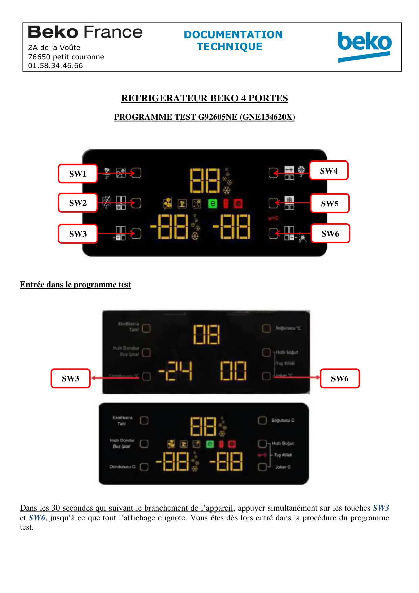
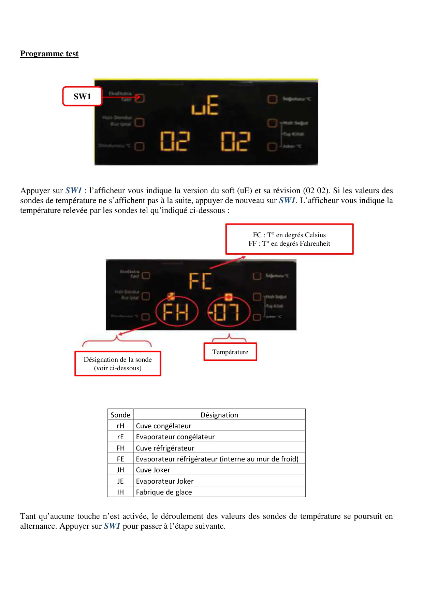
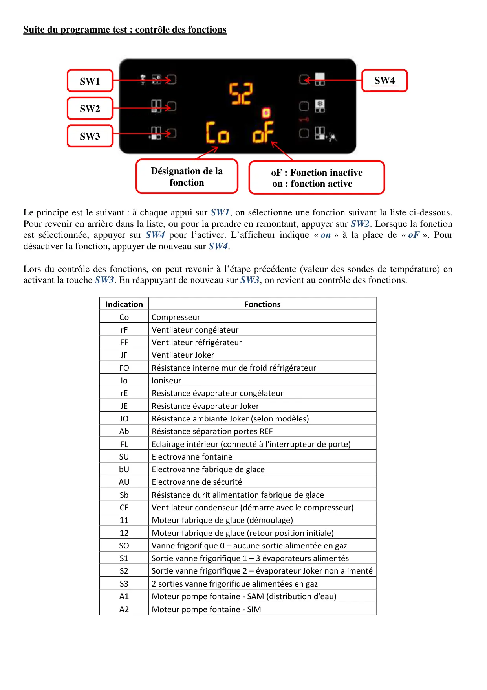
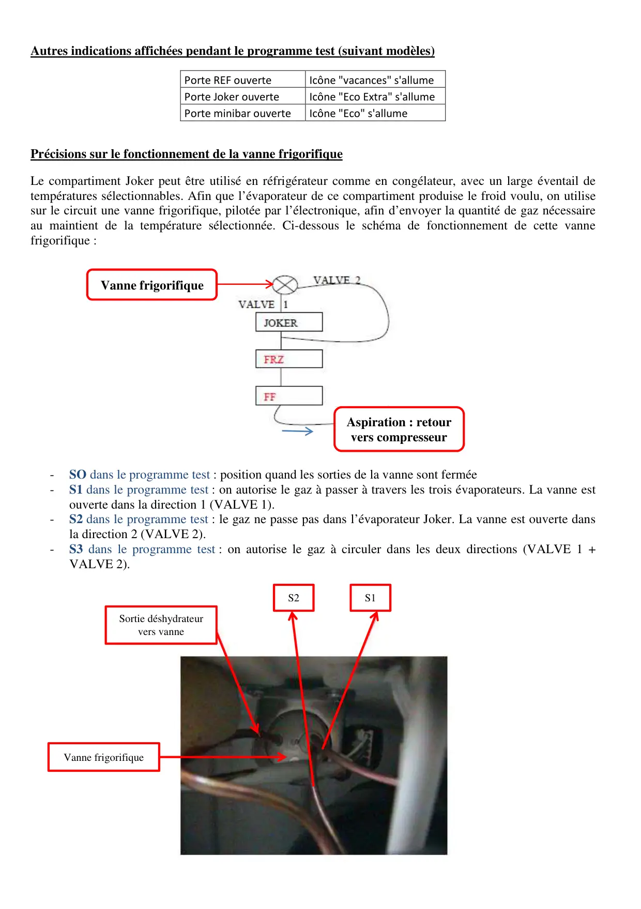
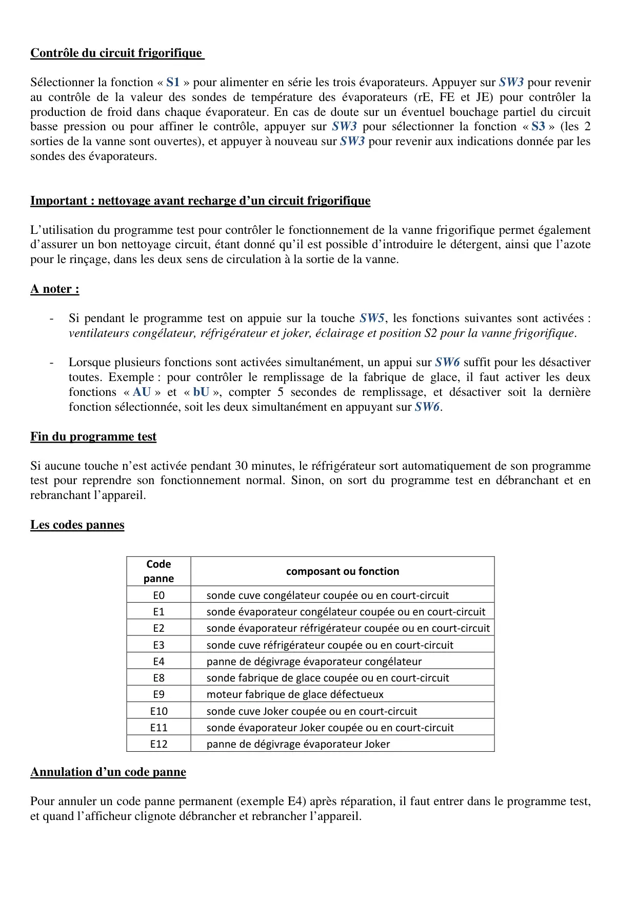

ProgrTest G92605NE GNE134620X

REFRIGERATEUR BEKO 4 PORTESPROGRAMME TEST G92605NE (GNE134620X)Entrée dans le programme testDans les 30 secondes qui suivant le branchement de l’appareil, appuyer simultanément sur les touches SW3et SW6, jusqu’à ce que tout l’affichage clignote. Vous êtes dès lors entré dans la procédure du programmetest.DOCUMENTATIONZA de la Voûte TECHNIQUE76650 petit couronne01.58.34.46.66SW4SW5SW6SW1SW2SW3SW3SW6
1 / 5
Programme testAppuyer sur SW1 : l’afficheur vous indique la version du soft (uE) et sa révision (02 02). Si les valeurs dessondes de température ne s’affichent pas à la suite, appuyer de nouveau sur SW1. L’afficheur vous indique latempérature relevée par les sondes tel qu’indiqué ci-dessous :SondeDésignationrHCuve congélateurrEEvaporateur congélateurFHCuve réfrigérateurFEEvaporateur réfrigérateur (interne au mur de froid)JHCuve JokerJEEvaporateur JokerIHFabrique de glaceTant qu’aucune touche n’est activée, le déroulement des valeurs des sondes de température se poursuit enalternance. Appuyer sur SW1 pour passer à l’étape suivante.SW1FC : T° en degrés CelsiusFF : T° en degrés FahrenheitTempératureDésignation de la sonde(voir ci-dessous)
2 / 5
Suite du programme test : contrôle des fonctionsLe principe est le suivant : à chaque appui sur SW1, on sélectionne une fonction suivant la liste ci-dessous.Pour revenir en arrière dans la liste, ou pour la prendre en remontant, appuyer sur SW2. Lorsque la fonctionest sélectionnée, appuyer sur SW4 pour l’activer. L’afficheur indique « on » à la place de « oF ». Pourdésactiver la fonction, appuyer de nouveau sur SW4.Lors du contrôle des fonctions, on peut revenir à l’étape précédente (valeur des sondes de température) enactivant la touche SW3. En réappuyant de nouveau sur SW3, on revient au contrôle des fonctions.IndicationFonctionsCoCompresseurrFVentilateur congélateurFFVentilateur réfrigérateurJFVentilateur JokerFORésistance interne mur de froid réfrigérateurIoIoniseurrERésistance évaporateur congélateurJERésistance évaporateur JokerJORésistance ambiante Joker (selon modèles)AbRésistance séparation portes REFFLEclairage intérieur (connecté à l'interrupteur de porte)SUElectrovanne fontainebUElectrovanne fabrique de glaceAUElectrovanne de sécuritéSbRésistance durit alimentation fabrique de glaceCFVentilateur condenseur (démarre avec le compresseur)11Moteur fabrique de glace (démoulage)12Moteur fabrique de glace (retour position initiale)SOVanne frigorifique 0 – aucune sortie alimentée en gazS1Sortie vanne frigorifique 1 – 3 évaporateurs alimentésS2Sortie vanne frigorifique 2 – évaporateur Joker non alimentéS32 sorties vanne frigorifique alimentées en gazA1Moteur pompe fontaine - SAM (distribution d'eau)A2Moteur pompe fontaine - SIMSW1SW2Désignation de lafonctionSW4oF : Fonction inactiveon : fonction activeSW3
3 / 5
Autres indications affichées pendant le programme test (suivant modèles)Porte REF ouverteIcône "vacances" s'allumePorte Joker ouverteIcône "Eco Extra" s'allumePorte minibar ouverteIcône "Eco" s'allumePrécisions sur le fonctionnement de la vanne frigorifiqueLe compartiment Joker peut être utilisé en réfrigérateur comme en congélateur, avec un large éventail detempératures sélectionnables. Afin que l’évaporateur de ce compartiment produise le froid voulu, on utilisesur le circuit une vanne frigorifique, pilotée par l’électronique, afin d’envoyer la quantité de gaz nécessaireau maintient de la température sélectionnée. Ci-dessous le schéma de fonctionnement de cette vannefrigorifique :-SO dans le programme test : position quand les sorties de la vanne sont fermée-S1 dans le programme test : on autorise le gaz à passer à travers les trois évaporateurs. La vanne estouverte dans la direction 1 (VALVE 1).-S2 dans le programme test : le gaz ne passe pas dans l’évaporateur Joker. La vanne est ouverte dansla direction 2 (VALVE 2).-S3 dans le programme test : on autorise le gaz à circuler dans les deux directions (VALVE 1 +VALVE 2).S2Sortie déshydrateurvers vanneS1Vanne frigorifiqueAspiration : retourvers compresseurVanne frigorifique
4 / 5
Contrôle du circuit frigorifiqueSélectionner la fonction « S1 » pour alimenter en série les trois évaporateurs. Appuyer sur SW3 pour revenirau contrôle de la valeur des sondes de température des évaporateurs (rE, FE et JE) pour contrôler laproduction de froid dans chaque évaporateur. En cas de doute sur un éventuel bouchage partiel du circuitbasse pression ou pour affiner le contrôle, appuyer sur SW3 pour sélectionner la fonction « S3 » (les 2sorties de la vanne sont ouvertes), et appuyer à nouveau sur SW3 pour revenir aux indications donnée par lessondes des évaporateurs.Important : nettoyage avant recharge d’un circuit frigorifiqueL’utilisation du programme test pour contrôler le fonctionnement de la vanne frigorifique permet égalementd’assurer un bon nettoyage circuit, étant donné qu’il est possible d’introduire le détergent, ainsi que l’azotepour le rinçage, dans les deux sens de circulation à la sortie de la vanne.A noter :-Si pendant le programme test on appuie sur la touche SW5, les fonctions suivantes sont activées :ventilateurs congélateur, réfrigérateur et joker, éclairage et position S2 pour la vanne frigorifique.-Lorsque plusieurs fonctions sont activées simultanément, un appui sur SW6 suffit pour les désactivertoutes. Exemple : pour contrôler le remplissage de la fabrique de glace, il faut activer les deuxfonctions « AU » et « bU », compter 5 secondes de remplissage, et désactiver soit la dernièrefonction sélectionnée, soit les deux simultanément en appuyant sur SW6.Fin du programme testSi aucune touche n’est activée pendant 30 minutes, le réfrigérateur sort automatiquement de son programmetest pour reprendre son fonctionnement normal. Sinon, on sort du programme test en débranchant et enrebranchant l’appareil.Les codes pannesCodepannecomposant ou fonctionE0sonde cuve congélateur coupée ou en court-circuitE1sonde évaporateur congélateur coupée ou en court-circuitE2sonde évaporateur réfrigérateur coupée ou en court-circuitE3sonde cuve réfrigérateur coupée ou en court-circuitE4panne de dégivrage évaporateur congélateurE8sonde fabrique de glace coupée ou en court-circuitE9moteur fabrique de glace défectueuxE10sonde cuve Joker coupée ou en court-circuitE11sonde évaporateur Joker coupée ou en court-circuitE12panne de dégivrage évaporateur JokerAnnulation d’un code pannePour annuler un code panne permanent (exemple E4) après réparation, il faut entrer dans le programme test,et quand l’afficheur clignote débrancher et rebrancher l’appareil.
5 / 5